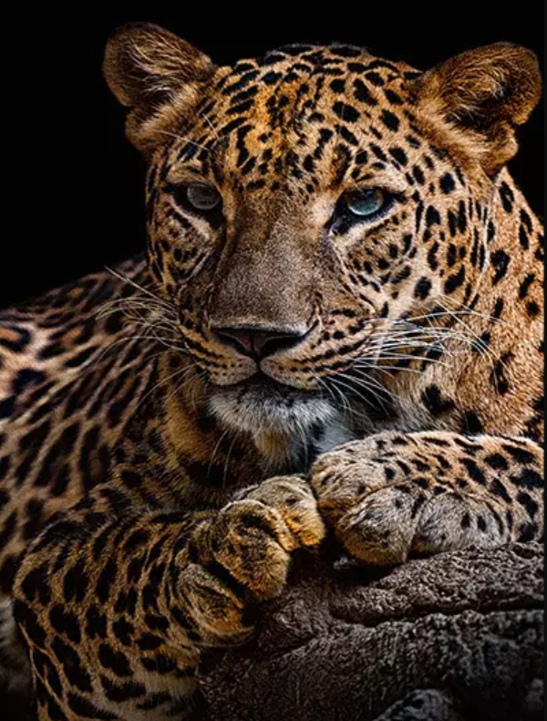

Onça Pintada

A onça-pintada é um grande felino, pertencente à família Felidae. Pertence ao gênero Panthera, mesmo gênero dos leões, leopardos, tigres e leopardos-das-neves. Tem uma coloração amarelo-dourada e pintas nas cabeças, patas e pescoço.
Ver mais sobre a onça pintada